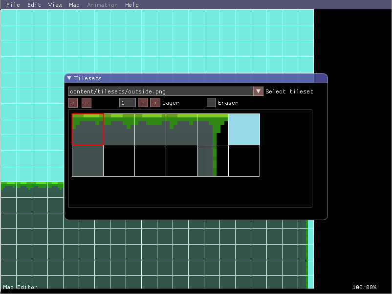
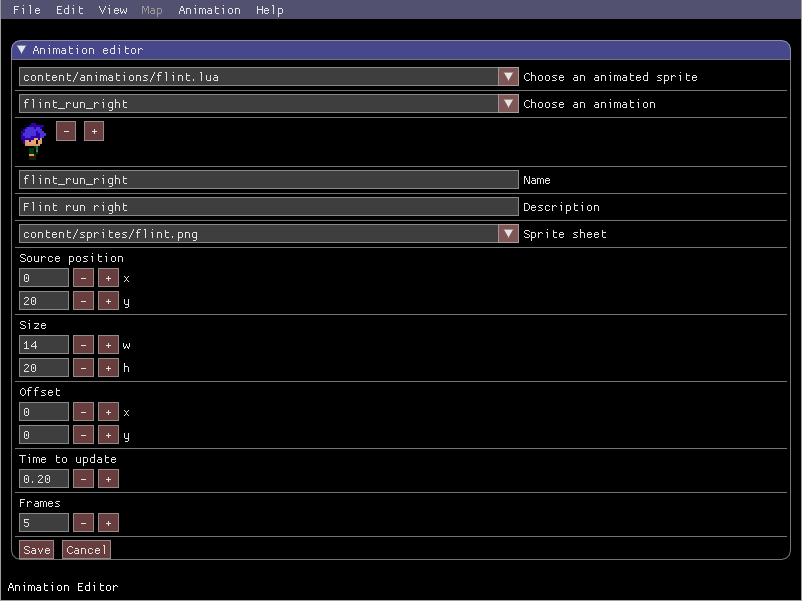
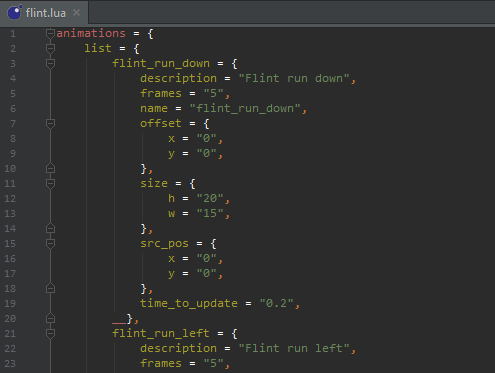

Lime2D is an open source in-game map/animation editor for 2D C++ game development projects.
Since it is an in-game editor, you can edit maps in real-time with your player, collisions, and everything else being rendered. You can then switch out of the editor and automatically see your updated map / animations. This makes for extremely efficient 2D level creation.
The editor can be used in any C++ project using SFML on Windows, Mac OS X, and Linux.
Installation
I've created a video tutorial showing the process of getting Lime2D integrated with your game. There is also a text version for those of you who don't want to follow an entire video.
If you have any trouble getting Lime2D installed / working or have any questions, please post below detailing exactly what the issue is. I or somebody else will respond as soon as possible.
Map editor


- Efficient custom map format created by me
- Create brand new maps of any size while already in-game
- Easy map configuration
- Tileset paths, sprite scale, tile scale, screen size, etc
- Use tiles from different tilesets
- Draw on multiple layers
- Undo / Redo
- Smooth zooming in / out
- Ambient light editor using real shaders
- Shape drawing (lines, rectangles, points)
- Entity list for viewing and updating properties of all map objects
Animation editor
 
- Stored efficiently in Lua files
- Create / load any animation while already in-game
- Saving the animation will automatically update it in-game without restarting the game
- Zoom in / out
- Change any animation properties from within the editor